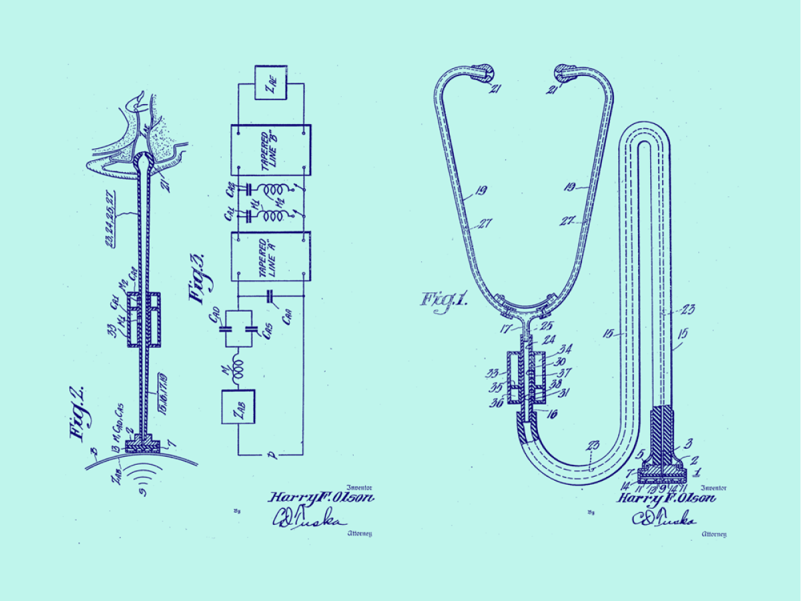
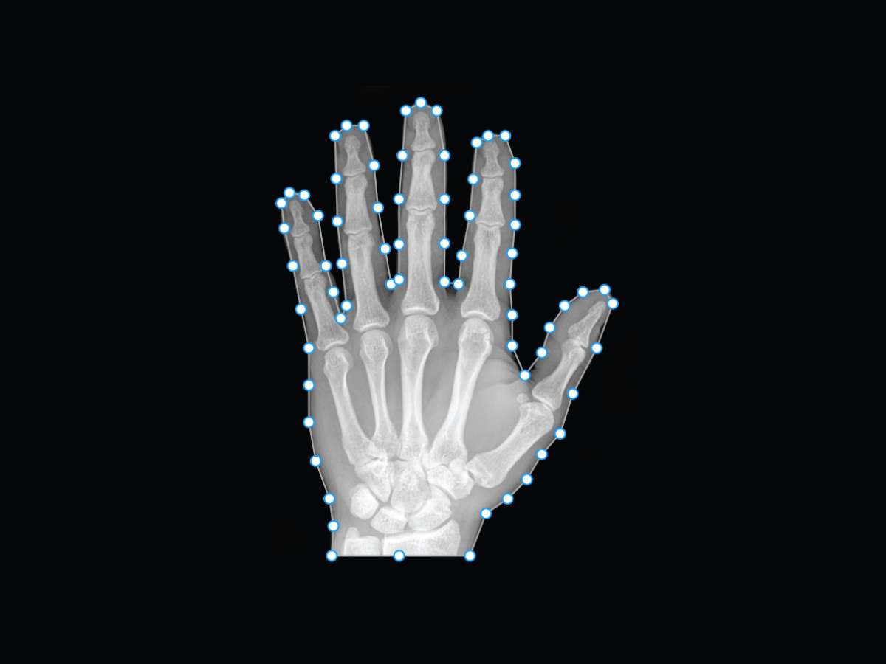
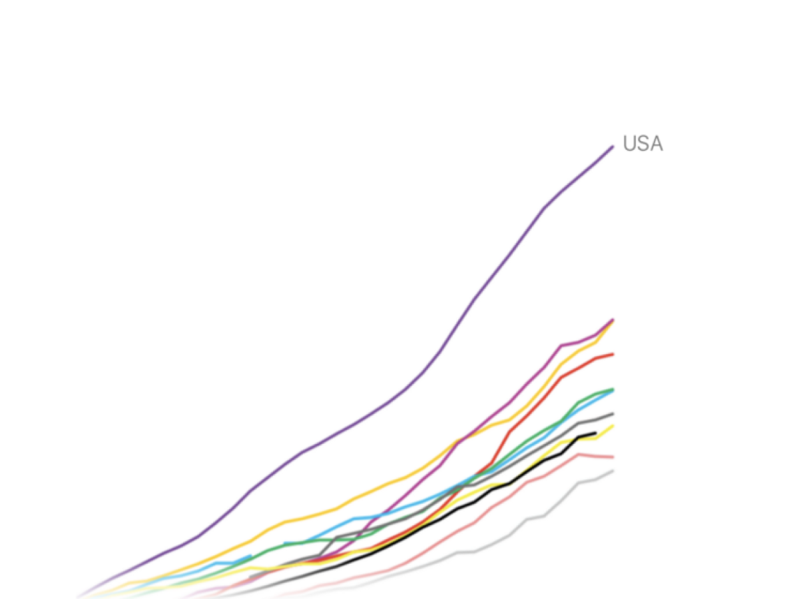
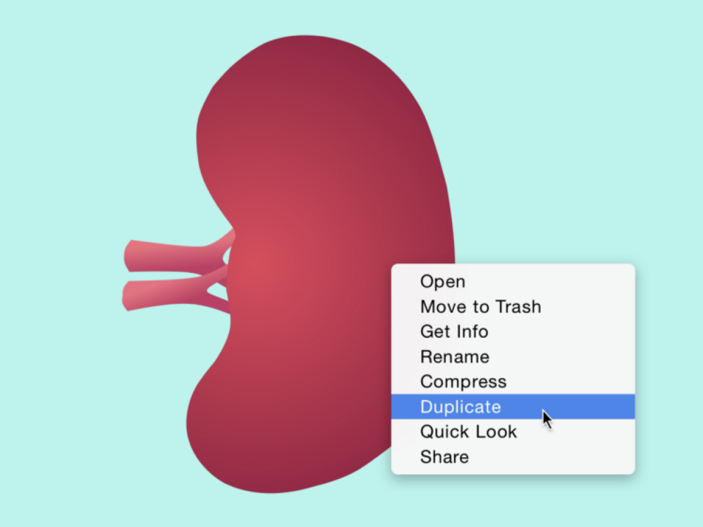

Tyler Beauchamp
DESIGN
WRITING
Bookshelf
I like to write about design, science, technology, and politics.
Humanizing Machine Learning
Lessons learned from designing adaptive page testing for HubSpot
Read
The Magic of Motion in UX Prototyping
How interactive prototypes can help generate buy-in & build user empathy
Read

Designing for Healthcare
Researching and prototyping UX design in the U.S. healthcare system
Read

An Unconventional Path to UX Design
How I pivoted from Biology & Premed to UX Design & Tech
Read
Getting Started with UX Prototyping
A handy list of design tools, resources, & articles for new UX designers
Read

Healthcare's Trillion Dollar Problem
Over one-third of healthcare spending in the United States is wasted. How did this happen, and where do we go from here?
Read
Learning from Past Success
What the CT scanner’s remarkable success (and emerging problems) can teach us about the implementation of medical innovations
Read
Healthcare's Big Data Problem
Why the “Big Data Revolution” hasn’t reached healthcare — and what we can do about it
Read

Regenerative Medicine
How politics, spectacle, and misinformation are drowning out the field’s most promising advancements
Read
Genetic Testing: Innovation, Regulation, & Culture
A look at the influences behind the most exciting tool in modern medicine
Read